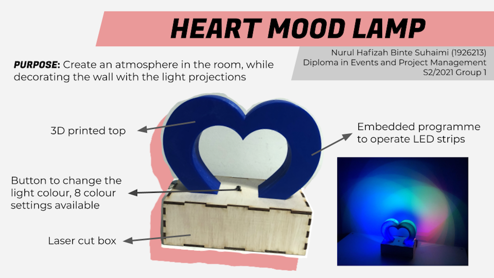

Heart Mood Lamp
For my final project, I have decided to do a mood lamp. I wanted a light that was useful and also looks nice to be placed in someone's room.
Planning
| I first looked around Instructables to find insporation on how I wante to do my mood lamp. I was then inspired by this post on Instructables. I decided to do a mood lamp where the light can shine onto the wall to give a nice light projection from the shape of the frame. I then tweaked the design by changing the shape of the top, which then I decided to do a heart shape top as I thought it would be nice to have a heart shape projection on the wall. |
After I have decided what to do, I designed it in Fusion 360. Below is how my lamp will look like. As you can see, There will be an area at the back for my to place my LED strip so that it can shine onto the wall. There are also holes at the base of the heart to allow me to insert the screw to join the heart and the base together. I also allowed holes for the LED strip to pass through and also the USB cable to connect to my power source.
3D Printing
For the top part, I have decided to 3D print it. For this size of print, it actually took very long, even after adjusting the settings. It took around 4hr 30min to print it. For the first try, there was actually a problem with the 3D printer where it did not heat up properly, causing it to be very uneven on one side.

|
 |
After I tried again the next day, it came out really nice and even. I was very satisfied as the heart was very solid, even though some settings were changed at Cura to make it print at a faster timing. You can view the final heart piece at the bottom where I showed my finished product!
Laser Cutting
For my base, I laser cut the ply wood to make my base. I sketched the parameter box as seen in (link to laser cutting) as well. As you can see, this was how the pieces turned out after cutting.

|
 |
| On the right is how the pieces looked assembled. Due to the thorough planning and calculations before, I was happy that the pieces all fit perfectly and snug. As you can see, there are the holes on top for the screws and for the LED strip to enter the heart piece. |  |
Embedded Programming
| My product makes use of a button as a input device and the LED strip as an output device. Working with the LED strip was relatively simple and easy to operate. On the right was how I connected the button and the LED strip to the Arduino UNO and the breadboard. |
| Below is how my code on Arduino looks like. I referenced this from Adafruit's 'buttoncycler'. I changed the colour of my choice in each sequence. In my code, there are a total of 8 cases, where everytime I click the button, the LED strip will change colour to the next one. |
|
Assembling
| I used M3 screws and nuts to hold both pieces together. I then used double-sided tape to stick my LED strips onto the heart piece. This is how my setup looked like, with my Arduino UNO in the boxand the button and LED strip being projected up into the top piece. I soldered wires onto my button so that it will be longer. I also soldered 2 LED strips together as I needed the strip to cover the whole heart shape. Soldering was very tough for me but i got the hang of it and managed to solder the button and LED strips successfully. |  |
The Finished Product
This is how the finished product looks like! Overall, I am very satisfied that everything works and I am happy that it looks very pretty when being light up.

| Below, you can view how the light looks like when being light up. You can see that it creates a light pattern on the wall. |
Bill of Materials
| S/N | Description | Unit Cost | Quantity | Total Cost | Remarks |
|---|---|---|---|---|---|
| 1 | Push Button | $0.00 | 1 | $0.00 | Provided by SP FabLab |
| 2 | LED Strip | $0.00 | 2 | $0.00 | Provided by SP FabLab |
| 3 | M3 Screw and Nut | $0.00 | 2 | $0.00 | Provided by SP FabLab |
| 4 | Arduino UNO | $0.00 | 1 | $0.00 | Provided by SP FabLab |
| 5 | Breadboard | $0.00 | 1 | $0.00 | Provided by SP FabLab |
Conclusion
Things I would change/do better next time:
- Top part: Since 3D printing takes too long, I would use laser cutting to produce the heart shape as it takes shoter to produce. Using laser cutting will also make the heart more solid as now, you can actually see the shadow of the infill inside when being lit up.
- Code: I would come up with a different setting where the colours would just run by itself without me pressing the button everytime. Since I am still uinexperienced with coding, I can do a more complex code next time
- Choice of output: Using a button might be too simple, I can change the output to maybe a ultrasensor or a potentiometer next time and make the project more complex.
